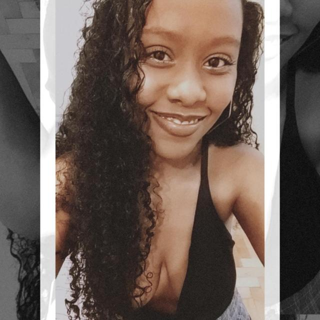

Quem somos?
"Desperte a força do teu império"
A Kingdom deu seus primeiros passos no início da pandemia do COVID-19. Em meio a uma crise mundial, encontramos uma oportunidade de começar a empreender. Com o isolamento, percebemos que as empresas necessitavam de uma conexão com seus clientes, de forma correta, através do meio digital e nada melhor do que uma rede social para isso! Assim nasceu a Kingdom, do limão fizemos uma caipirinha! Hoje ensinamos os nossos clientes que a conexão é a alma do negócio e que a presença no digital é mais que essencial. Só assim será possível o despertar da força do teu império!
Social Media & Markenting Digital e muito mais...
Criação e planejamento de conteúdo:
Planejamento, criação e organização do cronograma mensal da conta, com o objetivo de conectar a marca com o seguidor.
Consultoria:
Análise de dados dentro das mídias para alavancar a projeção de vendas e outros serviços da empresa contratada.
Análise estratégica:
Estudo de mercado, comparações com grandes marcas do ramo e estratégia de mídia digital.
Fotografia:
Ensaios fotográficos para construção da identidade da marca como: fotos do empreendedor, produtos, bastidores. Eventos e books pessoais.
Presença digital:
Se o teu negócio não está bem posicionado na internet, onde ele está? Te ajudamos a criar conexões verdadeiras com teus clientes, isso despertará a força do teu império.
Conheça os Membros da Corte
Amanda Domingues
Em 2017, começou a fotografar amigos por hobbie e foi se apaixonando pela arte, passando a enxergar a fotografia como uma maneira de eternizar momentos. Já em 2020, viu a necessidade de reinventar-se e começou a atuar nas mídias sociais. Graduada em Administração de Empresas pela PUCRS, fundou a AD Social Media, depois de 10 anos atuando no mercado como CLT, decidiu se dedicar 100% ao seu negócio, a Kingdom, sendo responsável por toda parte criativa.
Rafael Siqueira
Atuando há 7 anos na área comercial, adquiriu uma vasta expertise qualificando-se e aperfeiçoando cada vez mais o comportamento e necessidade de seus clientes. Viu na Kingdom a oportunidade de utilizar a sua bagagem para auxiliar no crescimento desse novo objetivo. Graduante em Comércio Exterior, tem como objetivo trazer maior praticidade na Kingdom e dar todo apoio na área comercial e administrativa da empresa.
Christian Lopes
Desde pequeno se identificou muito com o empreendedorismo. Apaixonado pela área sempre auxiliou diversos amigos com seus empreendimentos, criando novas idéias e identificando oportunidades. Em 2017 se formou em administração, e mesmo trabalhando de clt, nunca deixou de lado a sua paixão por empreendedorismo. Em 2019 criou seu pequeno negócio com produção e venda de doces e no ano seguinte, no auge da Pandemia, decidiu focar em consultoria para empresas e em auxiliar pessoas que gostariam de se tornar novos empreendedores. Na Kingdom, atua como parceiro de negócio auxiliando na área estratégica do negócio.
-

@isadoramaiato Depois que a Kingdom começou a trabalhar no meu perfil minhas redes cresceram organicamente, mudei a postura do perfil bla bla bla
-
@isadoramaiato Depois que a Kingdom começou a trabalhar no meu perfil minhas redes cresceram organicamente, mudei a postura do perfil bla bla bla
-
@isadoramaiato Depois que a Kingdom começou a trabalhar no meu perfil minhas redes cresceram organicamente, mudei a postura do perfil bla bla bla
-
@isadoramaiato Depois que a Kingdom começou a trabalhar no meu perfil minhas redes cresceram organicamente, mudei a postura do perfil bla bla bla
-
@isadoramaiato Depois que a Kingdom começou a trabalhar no meu perfil minhas redes cresceram organicamente, mudei a postura do perfil bla bla bla